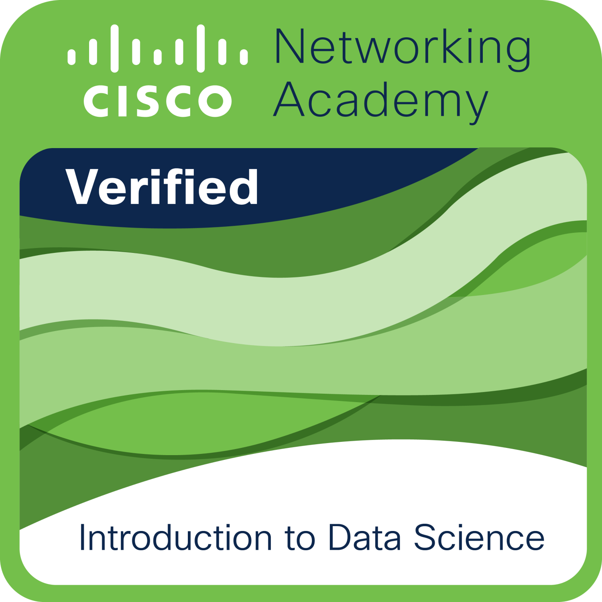

Bienvenue ! Je suis KOUAHON ESTELLE, une Ingénieure Statisticienne Économiste, Data Analyste & Data Scientist passionnée par la transformation des données en solutions concrètes et innovantes. Mon parcours, enrichi par une Licence en Économie et une spécialisation en statistique, me dote d'une double compétence rare : la capacité à maîtriser les aspects techniques de la donnée tout en comprenant les dynamiques économiques et leurs implications.
Ma Philosophie
"Aide-toi, et le ciel t'aidera." Cette maxime guide mon approche de la vie et du travail, nourrie par une foi et une confiance profondes en Dieu. Je crois fermement que le travail paie et que chaque effort investi nous rapproche de nos objectifs. Mon parcours m'a appris que la détermination, la découverte, la création et la programmation sont indispensables pour bâtir, améliorer et limiter de nombreux phénomènes que nous subissons.
L'élaboration d'applications et de modèles peut nous aider dans plusieurs domaines cruciaux. En santé, par exemple, nous pouvons développer des solutions pour la détection rapide de cancers ou de tumeurs, et créer des modèles prédictifs pour anticiper divers phénomènes afin d'être mieux préparés et de développer des solutions efficaces. D'autres domaines décisifs comme l'agriculture et l'élevage bénéficient également de ces innovations technologiques.
Centres d'Intérêt
Passionnée par l'univers des données, je m'intéresse profondément à la Data Science, mais aussi à de nombreux autres domaines connexes :
- Big Data - Analyse et traitement de volumes massifs de données
- Intelligence Artificielle - Développement de solutions intelligentes et automatisées
- Suivi et Évaluation de Projets - Mesure d'impact et optimisation des performances
- Modélisation Prédictive - Anticipation de tendances et phénomènes
Mon projet d'avenir est de collaborer avec des Organisations Internationales pour mettre mes compétences acquises durant toutes ces années au service du développement de solutions réelles et efficaces partout dans le monde. Cette aspiration guide mes choix de formation et mes projets professionnels.
Autres passions :
- Musique
- Cinéma
- Pâtisserie
Certificats et Formations
Programme DigiFemmes Academy
-
Piscine Go
Organisme : DigiFemmes Academy
Description : Programme intensif de piscine Go pour intégrer le programme de 2 ans de l'académie DigiFemmes.
Programme MTN Academy en Collaboration avec DigiFemmes
-
Data Literacy
Organisme : MTN Academy / DigiFemmes Academy
Date : 25/05/2025
Description : Acquisition des fondamentaux de la littératie des données.Voir le certificat Data LiteracyNote: Le certificat est au format PDF. Cliquez sur le lien pour le visualiser.
-
Excel
Organisme : MTN Academy / DigiFemmes Academy
Date : 02/06/2025
Description : Maîtrise avancée d'Excel pour l'analyse et la visualisation de données.Voir le certificat ExcelNote: Le certificat est au format PDF. Cliquez sur le lien pour le visualiser.
-
Data Science Math Skills
Organisme : MTN Academy / DigiFemmes Academy
Date : 21/05/2025
Description : Compétences mathématiques essentielles pour la science des données.Voir le certificat Data Science Math SkillsNote: Le certificat est au format PDF. Cliquez sur le lien pour le visualiser.
-
IBM certificat ML avec python programme MTN-DigiFemme
Organisme : IBM / MTN Academy / DigiFemmes Academy
Description : Certification en Machine Learning avec Python.Voir le certificat IBM ML avec PythonNote: Le certificat est au format PDF. Cliquez sur le lien pour le visualiser.
-
Badge Machine Learning with Python v2
Organisme : IBM / MTN Academy
Description : Badge validant les compétences en Machine Learning avec Python.
-
Certificat Data Science Maths Skills
Organisme : MTN Academy / DigiFemmes Academy
Date : 21/05/2025
Description : Compétences mathématiques avancées pour la science des données.Voir le certificat Data Science Maths SkillsNote: Le certificat est au format PDF. Cliquez sur le lien pour le visualiser.
-
Coursera Programmation
Organisme : MTN Academy / DigiFemmes Academy
Date : 14/06/2025
Description : Formation en programmation informatique.Voir le certificat Coursera ProgrammationNote: Le certificat est au format PDF. Cliquez sur le lien pour le visualiser.
Cisco Networking Academy
-
AI Fundamentals with IBM SkillsBuild
Organisme : Cisco Networking Academy / IBM SkillsBuild
Date : 24/04/2025
Description : Introduction aux concepts clés de l’intelligence artificielle, à ses cas d’usage et aux enjeux éthiques. Le parcours aborde les bases de l’apprentissage automatique et l’évaluation des modèles dans un contexte métier.Voir le certificat AI Fundamentals with IBM SkillsBuildNote: Le certificat est au format PDF. Cliquez sur le lien pour le visualiser.
-
Badge AI Fundamentals IBM SkillsBuild
Organisme : Cisco Networking Academy / IBM SkillsBuild
Description : Badge attestant la maîtrise des fondamentaux de l’IA (concepts, cas d’usage, éthique et notions de machine learning). Il valide la réussite des évaluations et activités pratiques du parcours.
-
Artificial Intelligence Fundamentals
Organisme : Cisco Networking Academy
Description : Certification couvrant les notions clés de l’IA, les principaux types d’algorithmes (supervisé et non supervisé) et les étapes d’un projet. L’accent est mis sur l’interprétation des résultats et les impacts métiers responsables.Voir le certificat Artificial Intelligence FundamentalsNote: Le certificat est au format PDF. Cliquez sur le lien pour le visualiser.
-
Badge Artificial Intelligence Fundamentals
Organisme : Cisco Networking Academy
Description : Badge confirmant la compréhension des principes et applications de l’IA ainsi que des bonnes pratiques d’éthique. Délivré après réussite des évaluations et validation des compétences.
-
Badge Machine Learning with Python
Organisme : Cisco Networking Academy
Description : Badge validant les bases du machine learning avec Python, de la préparation des données à l’entraînement et l’évaluation de modèles. Il atteste la compréhension des bonnes pratiques et de l’application des algorithmes à des cas concrets.
-
Data Science
Organisme : Cisco Networking Academy
Description : Certification présentant le processus de la data science, de la collecte à la communication des résultats (préparation des données, EDA, modélisation). Elle met en avant les outils et méthodes pour transformer les données en informations actionnables.Voir le certificat Data ScienceNote: Le certificat est au format PDF. Cliquez sur le lien pour le visualiser.
-
Introduction to Data Science
Organisme : Cisco Networking Academy
Date : 20/04/2025
Description : Parcours d’initiation couvrant l’analyse exploratoire, les notions de statistiques, la visualisation et une introduction au machine learning. Le badge atteste la capacité à structurer une démarche analytique et à interpréter les résultats.
Mes Projets
Prévision de la Pollution à Pékin
Contexte
Pékin connaît des niveaux de pollution aux particules fines (PM2.5) largement supérieurs aux recommandations de l'OMS, surtout en hiver. Cette situation exige des outils de prévision fiables pour anticiper les pics et protéger la population.
Résultats obtenus
Après comparaison de plusieurs modèles (TBATS, Prophet, SARIMAX simple), le SARIMAX enrichi avec variables météo, retard de pollution et termes quadratiques s'est révélé le plus performant (RMSE : 58,78 ; MAPE : 60,46%), offrant un bon compromis entre précision et interprétabilité.
Difficultés rencontrées
Variance instable nécessitant une transformation logarithmique, prédiction limitée des pics extrêmes liés à des événements non inclus dans les données, et ajustement complexe des paramètres saisonniers et exogènes.
PROJET_STUDENT_DEPRESSION
Contexte
Ce projet, mon premier dashboard, a été réalisé dans le cadre d'un projet d'inférences statistiques. Son objectif principal était de déterminer les facteurs clés (déterminants) de la dépression chez les étudiants, en s'appuyant sur des analyses approfondies et des tests d'hypothèses rigoureux.
Résultats obtenus
Le projet a abouti à la création d'un tableau de bord fonctionnel permettant de visualiser et d'explorer les déterminants identifiés de la dépression. Les analyses statistiques ont permis de mettre en évidence des corrélations significatives et de valider des hypothèses concernant les facteurs influençant la santé mentale des étudiants.
Difficultés rencontrées
Les défis rencontrés incluaient la collecte de données pertinentes et fiables sur la dépression étudiante, la gestion de la qualité des données, et l'interprétation précise des résultats des modèles statistiques complexes pour en tirer des conclusions actionnables.
Segmentation Client
Contexte
Analyse et segmentation de la clientèle pour améliorer les stratégies marketing.
Résultats
Identification de segments de clients clés permettant d'optimiser les campagnes marketing.
Difficultés rencontrées
Gestion de données hétérogènes et choix des méthodes de clustering adaptées.
Analyse des Délais de Livraison
Contexte
Le projet s'inscrit dans une démarche d'analyse économétrique visant à étudier les facteurs influençant un délai de livraison. L'objectif est d'identifier et de quantifier l'impact de variables quantitatives explicatives sur ce délai, afin d'apporter des éléments utiles pour optimiser la logistique et la gestion des commandes.
Résultats obtenus
L'analyse statistique et économétrique a permis de sélectionner un modèle pertinent après plusieurs tests, incluant notamment la vérification des hypothèses classiques (normalité des résidus, absence d'hétéroscédasticité, indépendance). Les coefficients estimés ont montré quelles variables ont un effet significatif sur le délai, et la qualité d'ajustement du modèle a été jugée satisfaisante (R² élevé, erreurs faibles). Les résultats fournissent des pistes concrètes pour améliorer les délais de livraison.
Difficultés rencontrées
Les principales difficultés ont concerné la préparation et le nettoyage des données (traitement des valeurs aberrantes et des données manquantes), le choix du modèle économétrique optimal face à plusieurs spécifications concurrentes, et la validation des hypothèses de base (homoscédasticité, absence d'autocorrélation).
Un risque de surapprentissage (overfitting) a été identifié, favorisé par un nombre élevé de variables dans le modèle et un découpage précoce du jeu de données avant le prétraitement. D'autres facteurs ont pu renforcer ce surapprentissage : absence de régularisation (Ridge, Lasso), pas de réduction de dimension, validation croisée limitée, et taille relativement faible du jeu de données.
Mini Projet Store
Contexte
Développement d'une solution d'analyse pour un magasin de détail afin d'optimiser les ventes.
Résultats obtenus
Création d'un tableau de bord analytique permettant de visualiser les tendances de vente et d'identifier les opportunités.
Difficultés rencontrées
Intégration de sources de données diverses et conception d'une interface utilisateur intuitive.
Ma Bibliothèque
Passionnée par le digital, je suis une autodidacte qui aime apprendre, lire et acquérir de nouvelles compétences. Voici quelques livres qui m'ont inspirée et aidée dans mon parcours professionnel.

R pour la statistique et la science des données
Ce livre est une introduction complète à l'utilisation de R pour l'analyse statistique et la science des données. Il couvre les concepts fondamentaux de la programmation en R, les techniques de visualisation de données, et les méthodes statistiques essentielles pour l'analyse de données.

Algorithme d'apprentissage d'ensemble avec Python
Cet ouvrage explore les techniques avancées d'apprentissage d'ensemble en machine learning avec Python. Il présente des méthodes comme le bagging, le boosting et les forêts aléatoires, avec des exemples pratiques et des implémentations en Python pour améliorer la précision des modèles prédictifs.

Apprentissage automatique supervisé
Ce livre détaille les principes et techniques de l'apprentissage supervisé, couvrant les algorithmes de classification et de régression. Il offre une approche théorique solide complétée par des exemples pratiques pour développer des modèles prédictifs efficaces.

Deep Learning for Computer Vision
Cet ouvrage explore l'application du deep learning à la vision par ordinateur. Il couvre les réseaux de neurones convolutifs, la détection d'objets, la segmentation d'images et d'autres techniques avancées pour analyser et interpréter des images numériques.

Introduction à la prévision des séries temporelles avec Python
Ce livre présente les méthodes et techniques pour analyser et prévoir des séries temporelles avec Python. Il couvre les modèles ARIMA, les méthodes de lissage exponentiel, et les approches modernes basées sur le machine learning pour la prédiction de données séquentielles.
Mes Créations
Passionnée par le digital, je m'intéresse à la création d'applications et de dashboards pour résoudre des problèmes concrets et optimiser les processus. Voici quelques-unes de mes créations récentes.
Tableau de Bord - Projet Inférence sur la Dépression
Mon premier dashboard, réalisé dans le cadre du projet d’inférences statistiques.
Objectif : déterminer les déterminants de la dépression chez les étudiants à partir des analyses et tests d’hypothèses.

Application de Web Scraping – Immobilier (Côte d'Ivoire)
Projet scolaire consistant à développer une application de web scraping pour extraire des informations à partir du site AnnuaireCI sur la requête « immobilier ».
Objectif : collecter et structurer les données (noms d'entreprises, contacts, localisations) afin de constituer un jeu de données exploitable pour l'analyse.
Site cible : annuaireci.com – recherche « immobilier »